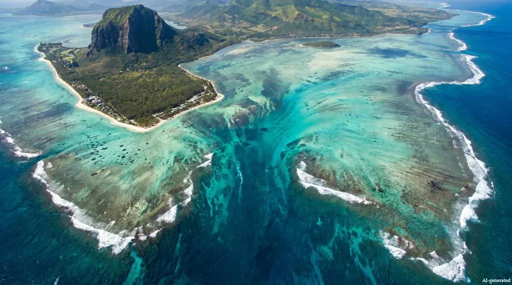
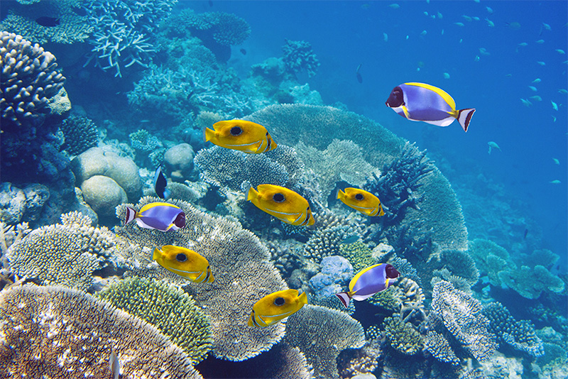
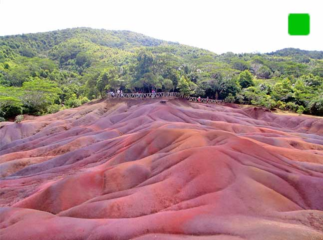
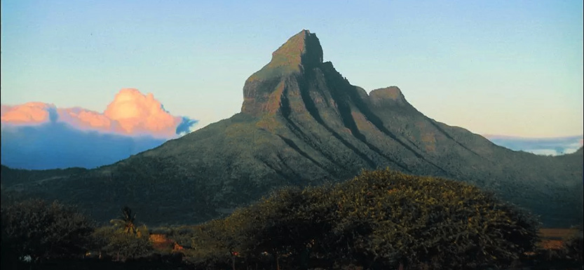
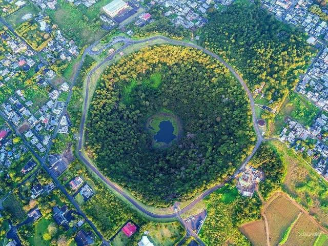

Née du feu des volcans et bordée par l’océan Indien, l’île Maurice concentre sur un territoire compact une diversité de décors saisissante. En quelques kilomètres seulement, les lagons turquoise cèdent la place aux falaises de basalte noir, aux forêts tropicales denses et aux montagnes escarpées, offrant un spectacle naturel permanent
La « cascade sous-marine » du Morne : Vue du ciel, la pointe sud-ouest de l'île donne l'illusion parfaite d'une chute d'eau vertigineuse plongeant dans les abysses. Il s'agit en réalité d'un effet d'optique créé par les courants marins qui entraînent le sable et le limon vers les profondeurs de l'océan.

La 3ᵉ plus grande barrière de corail au monde : L'île est presque entièrement entourée d'un récif corallien de près de 150 kilomètres de long, qui protège les plages de la houle et crée ces célèbres lagons aux eaux calmes et cristallines.

Une terre aux 7 couleurs : À Chamarel, des dunes volcaniques affichent sept nuances distinctes (rouge, brun, violet, vert, bleu, pourpre et jaune). Phénomène unique au monde : même si l'on mélange ces terres, elles finissent toujours par se séparer à nouveau selon leurs couleurs.

Le point culminant de l'île : Le Piton de la Petite Rivière Noire est le plus haut sommet de Maurice avec ses 828 mètres d'altitude, offrant un panorama complet sur les côtes sud et ouest.

Des plages qui « chantent » : Le sable blanc de Maurice est principalement issu de l'érosion des coraux et des coquillages par les vagues et les poissons-perroquets, ce qui le rend particulièrement fin et doux sous les pieds.

Un cratère endormi en pleine ville : Le Trou aux Cerfs, situé à Curepipe, est un ancien cratère volcanique de 85 mètres de profondeur et de plus de 300 mètres de diamètre, aujourd'hui recouvert d'une forêt luxuriante.
